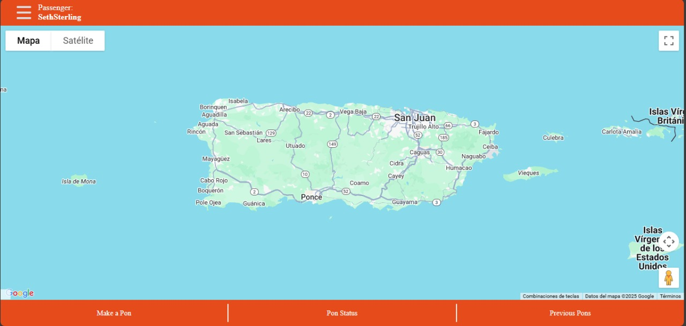
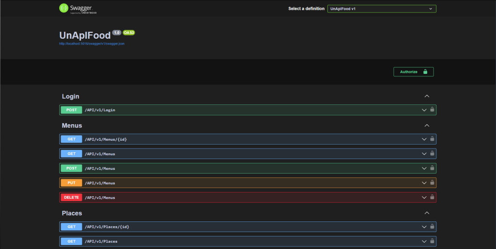
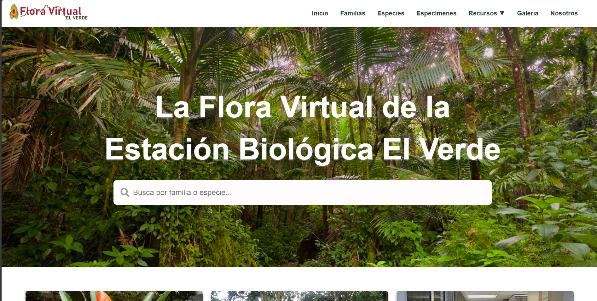
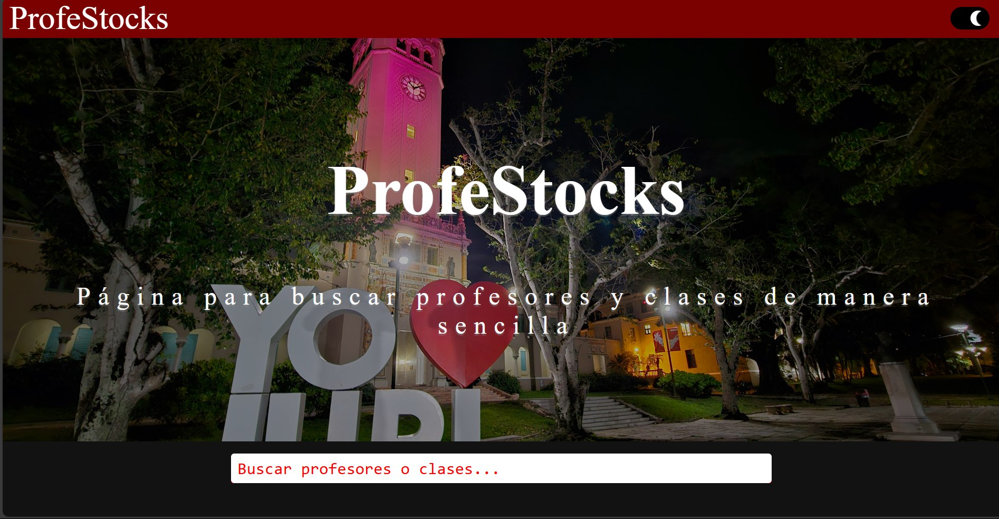
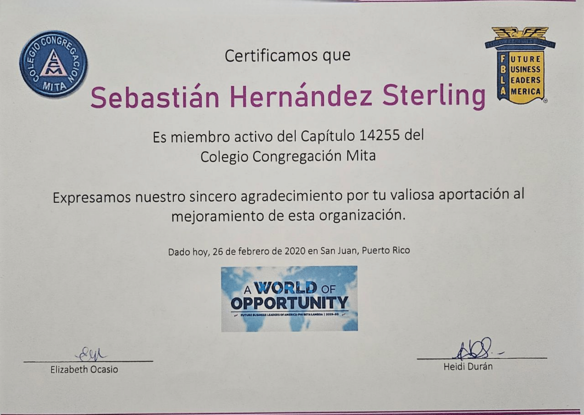
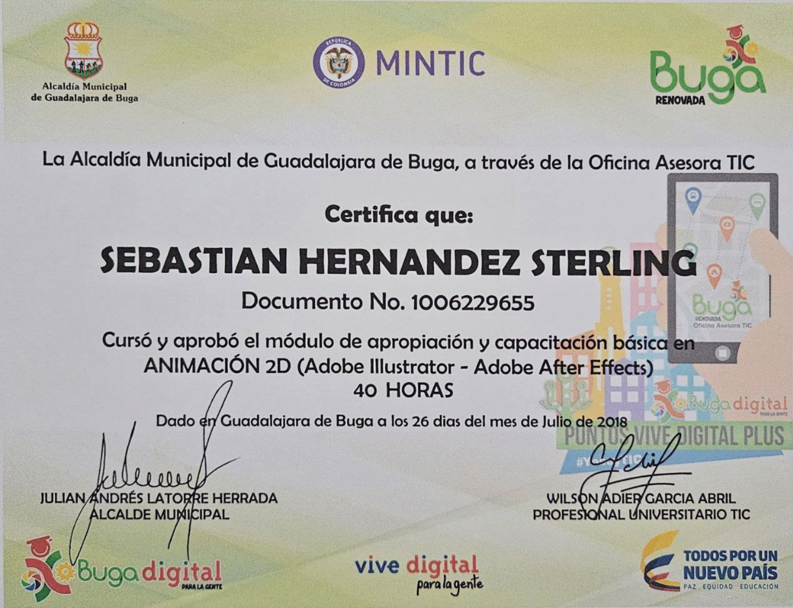
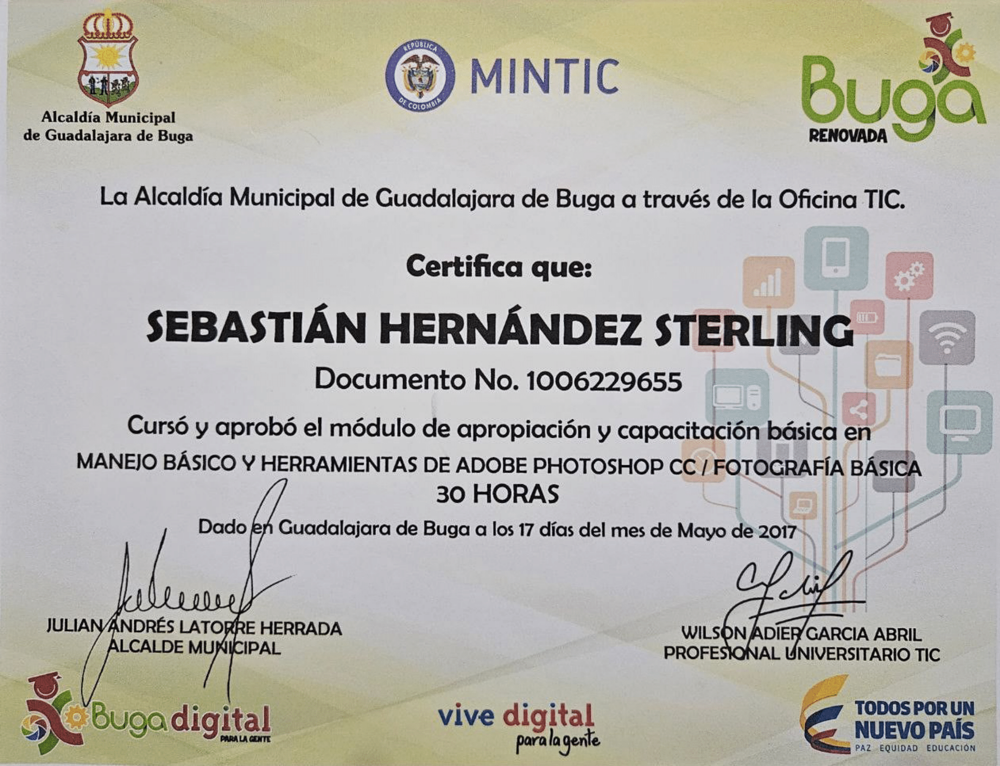

COURSES
by March 04, 2025
Systems:
- Compuert Architecture
- Operating Systems
- Data Communication
- Compilers
Security:
- Cybersecurity
- Systems and Networks Security
- Networks Defenses
Development:
- API Design & Development
- Software Engineering
- Databases
Analysis and Programming:
- Data Structures
- Design and Analysis of Algorithms
- High Level Languages
Profesional Experiencie
Fullstack developer, System administrator, Project manager at the “Division of Continuing Education and Professional Studies” (DECEP).
Development, Styles and Webapps Design, Cybersecurity, Database Management, Python, Django and management of Docker containers and Systems.
Maintain communication and distribute tasks according to team roles.
2024 - present
Fullstack developer at the “Center of Innovation, Research and Education in Environmental Nanotechnology” (CIRE2N).
Develop Styles and Webapps Design, Cybersecurity, Database Management, PHP, Javascript, CSS, HTML5, LAMP configuration and Docker containers management.
2023 - 2024
Community Manager at the University of Puerto Rico Rio Piedras Campus Business Administration Library.
Developed and executed targeted promotions and advertisements based on comprehensive analysis of social media statistics to enhance online presence.
2022 - 2023
PROJECTS

iPon - A driven mobile application
Carsharing app for linking people on the same trip. It was programmed with mobile devices in mind, although its design is responsive to other devices.
Technologies:
- Django
- Python
- API
- Javascript
- MySql

Favorite restaurants at University project using swagger API
The project is based on creating the complete API system, both the FrontEnd and the BackEnd, connecting it to a previously established database and filling it with the information itself using the EndPoints.
Technologies:
- Swagger
- DotNet
- C#
- Angular
- TypeScript

Flora ElVerde at CATEC – UPRRP
The web app consists of the visualization of the information previously obtained from the Flora ElVerde database. For this, the entire “Front End” section of the application was redesigned, as well as the “Back End” logistics, in order to carry out the task of displaying information for consumption.
Technologies:
- PHP
- Apache
- Docker
- MariaDB
- Javascript
- JQuery

Profestocks – Web Application
Developed in conjunction with Adriana Hernández Vega (Main programmer) and Sebastián Sterling (Secondary programmer) Our inspiration arose from the needs of the students when registering for the new semester, which professors gave the classes and how these professors behaved in class, how they really acted.
Technologies:
- PHP
- Apache
- Docker
- MySql
- Javascript
CERTIFICATES


